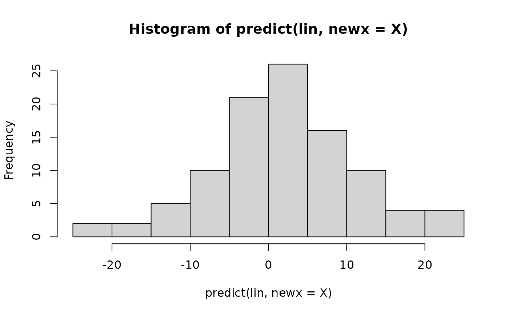
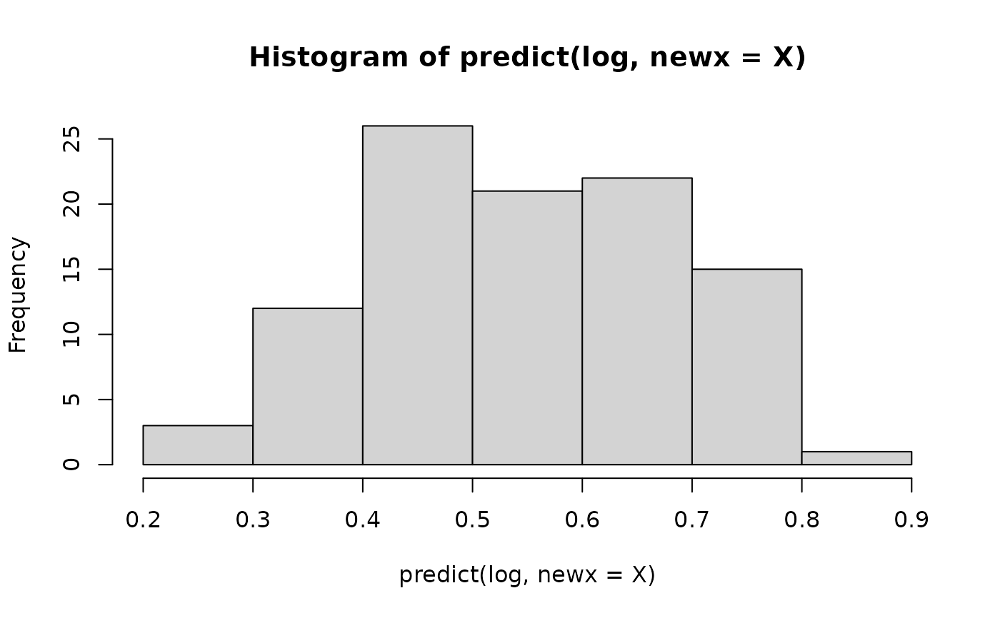

Implements penalised regression with multiple sets of prior effects
Usage
transreg(
y,
X,
prior,
family = "gaussian",
alpha = 1,
foldid = NULL,
nfolds = 10,
scale = "iso",
stack = "sim",
sign = FALSE,
switch = FALSE,
select = TRUE,
track = FALSE,
parallel = FALSE
)Arguments
- y
target: vector of length \(n\) (see
family)- X
features: matrix with \(n\) rows (samples) and \(p\) columns (features)
- prior
prior coefficients: matrix with \(p\) rows (features) and \(k\) columns (sources of co-data)
- family
character "gaussian" (\(y\): real numbers), "binomial" (\(y\): 0s and 1s), or "poisson" (\(y\): non-negative integers);
- alpha
elastic net mixing parameter (0=ridge, 1=lasso): number between 0 and 1
- foldid
fold identifiers: vector of length \(n\) with entries from 1 to `nfolds`
- nfolds
number of folds: positive integer
- scale
character "exp" for exponential calibration or "iso" for isotonic calibration
- stack
character "sta" (standard stacking) or "sim" (simultaneous stacking)
- sign
sign discovery procedure: logical (experimental argument)
- switch
choose between positive and negative weights for each source: logical
- select
select from sources: logical
- track
show intermediate output (messages and plots): logical
- parallel
logical (see cv.glmnet)
Value
Returns an object of class `transreg`. Rather than accessing its slots (see list below), it is recommended to use methods like [coef.transreg()] and [predict.transreg()].
* slot `base`: Object of class `glmnet`. Regression of outcome on features (without prior effects), with \(1 + p\) estimated coefficients (intercept + features).
* slot `meta.sta`: `NULL` or object of class `glmnet`. Regression of outcome on cross-validated linear predictors from prior effects and estimated effects, with \(1 + k + 2\) estimated coefficients (intercept + sources of co-data + lambda_min and lambda_1se).
* slot `meta.sim`: `NULL` or object of class `glmnet`. Regression of outcome on meta-features (cross-validated linear predictors from prior effects) and original features, with \(1 + k + p\) estimated coefficients (intercept + sources of co-data + features).
* slot `prior.calib`: Calibrated prior effects. Matrix with \(p\) rows and \(k\) columns.
* slot `data`: Original data. List with slots `y`, `X` and `prior` (see arguments).
* slot `info`: Information on call. Data frame with entries \(n\), \(p\), \(k\), `family`, `alpha`, `scale` and `stack` (see details and arguments).
References
Armin Rauschenberger, Zied Landoulsi, Mark A. van de Wiel, and Enrico Glaab (2023). "Penalised regression with multiple sets of prior effects". *Bioinformatics* 39(12):btad680. doi:10.1093/bioinformatics/btad680 . (Click here to access PDF.)
Examples
#--- simulation ---
n <- 100; p <- 500
X <- matrix(rnorm(n=n*p),nrow=n,ncol=p)
beta <- rnorm(p)*rbinom(n=p,size=1,prob=0.2)
prior1 <- beta + rnorm(p)
prior2 <- beta + rnorm(p)
y_lin <- X %*% beta
y_log <- 1*(y_lin > 0)
#--- single vs multiple priors ---
one <- transreg(y=y_lin,X=X,prior=prior1)
two <- transreg(y=y_lin,X=X,prior=cbind(prior1,prior2))
weights(one)
#> [1] 0.6724394
weights(two)
#> [1] 0.6208604 0.5642326
# \donttest{
#--- linear vs logistic regression ---
lin <- transreg(y=y_lin,X=X,prior=prior1,family="gaussian")
log <- transreg(y=y_log,X=X,prior=prior1,family="binomial")
hist(predict(lin,newx=X)) # predicted values

hist(predict(log,newx=X)) # predicted probabilities

#--- ridge vs lasso penalisation ---
ridge <- transreg(y=y_lin,X=X,prior=prior1,alpha=0)
lasso <- transreg(y=y_lin,X=X,prior=prior1,alpha=1)
# initial coefficients (without prior)
plot(x=coef(ridge$base)[-1]) # dense
plot(x=coef(lasso$base)[-1]) # sparse
# final coefficients (with prior)
plot(x=coef(ridge)$beta) # dense
plot(x=coef(lasso)$beta) # not sparse
#--- exponential vs isotonic calibration ---
exp <- transreg(y=y_lin,X=X,prior=prior1,scale="exp")
iso <- transreg(y=y_lin,X=X,prior=prior1,scale="iso")
plot(x=prior1,y=exp$prior.calib)
 plot(x=prior1,y=iso$prior.calib)
#--- standard vs simultaneous stacking ---
prior <- c(prior1[1:250],rep(0,250))
sta <- transreg(y=y_lin,X=X,prior=prior,stack="sta")
sim <- transreg(y=y_lin,X=X,prior=prior,stack="sim")
plot(x=coef(sta$base)[-1],y=coef(sta)$beta)
plot(x=coef(sim$base)[-1],y=coef(sim)$beta)# }
plot(x=prior1,y=iso$prior.calib)
#--- standard vs simultaneous stacking ---
prior <- c(prior1[1:250],rep(0,250))
sta <- transreg(y=y_lin,X=X,prior=prior,stack="sta")
sim <- transreg(y=y_lin,X=X,prior=prior,stack="sim")
plot(x=coef(sta$base)[-1],y=coef(sta)$beta)
plot(x=coef(sim$base)[-1],y=coef(sim)$beta)# }